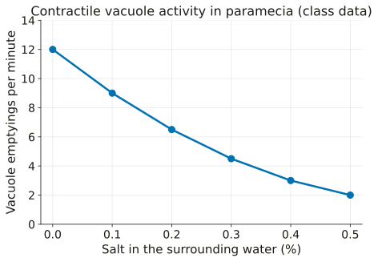
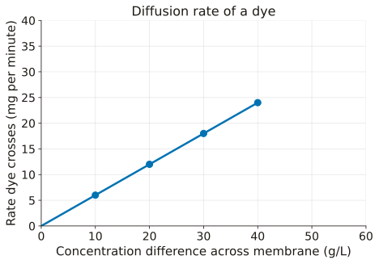
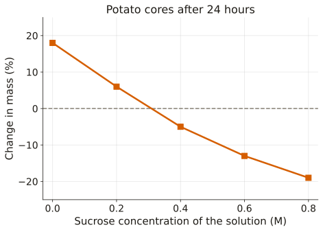

Question Banks, by Unit
Practice exams and question banks written by J. R. Schwebach for his Biology classes, with an explanation for every answer choice. Each one appears here first, with the date it was published, and then goes into Canvas. Original practice questions written to the Virginia 2018 Biology SOL; not produced or endorsed by the Virginia Department of Education. © J. R. Schwebach, licensed CC BY-NC 4.0.
Unit 2 · Cell Structure and Function · Practice Exam
Published 10 October 2026 · Biology I and Advanced Biology I, Module 2, Lesson 7 · 28 questions, 45 minutes, 100 points · Canvas Original #29 · 18 questions adapted from Bio Tool #8 (Practice collection), 10 new
A full-length practice exam for Unit 2, the same length and mix of formats as a unit test, with an explanation for every answer choice and the place in Module 2 that reteaches each idea.
How to use it: answer all 28 before opening any explanation. Then open each one, including the ones you got right, and read why each wrong choice is wrong. Every explanation ends with where to study that idea.
LT 2.1 Cell Theory
1. Tell a theory from a hypothesis, an observation and a law.
Which statement is a scientific theory?
- Living things are made of cells, and cells come from existing cells; evidence from thousands of studies supports this explanation.
- If more fertilizer washes into a pond, then the algae cells there will divide faster.
- In every chemical reaction ever measured, the total mass of the products equals the total mass of the reactants.
- Drops of pond water from behind the school contain hundreds of tiny, round green cells.
Answer and explanation
Answer: A
The idea: A scientific theory is a broad explanation of WHY something happens, tested again and again and supported by a large body of evidence. The cell theory is one. A hypothesis is a testable prediction (often 'if…, then…'), an observation is a record of what was seen, and a law describes a pattern that always holds without explaining it.
- B: This is an if-then prediction that one experiment could test. That makes it a hypothesis, not a theory.
- C: This describes a pattern that holds every time (conservation of mass) without explaining why. That is a law.
- D: This is a record of what someone saw in a sample. That is an observation.
Going further: Theories do not 'graduate' into laws. A law tells you what happens; a theory tells you why.
Where to study: Self-Check: Scientific Theory, Law, and Hypothesis · Presentation: Cell Theory (Module 2 in Canvas). Study guide, Cell Theory section: 'Contrast a scientific theory and a scientific law.'
2. Match evidence to the cell-theory ideas it supports.
Researchers scrape a slimy film from rocks beside a deep-sea hot vent. Under a microscope the film is made of tiny membrane-bound units, and over one day each unit splits into two. Which ideas from the cell theory do these two observations support?
- The film is alive because it is warm, and warmth is a sign of life.
- Cells contain DNA, and cells use energy from food.
- Living things are built of cells, and new cells come from cells that already exist.
- Cells form from the minerals in vent water, and then they divide.
Answer and explanation
Answer: C
The idea: Two observations, two ideas. Being built of tiny membrane-bound units is evidence that a living thing is made of cells. Watching one unit split into two is evidence that new cells come only from cells that already exist. Strong evidence comes from what you SEE the cells do, not from guesses about warmth or chemistry.
- A: Warmth is not evidence of life; hot water and rocks are warm too, and the question asks which cell-theory ideas the observations support.
- B: Both statements are true of cells, but nothing in these observations shows DNA or energy use.
- D: Cells never form from minerals. Every cell comes from a cell; that is exactly what the splitting shows.
Going further: Scientists use this same test on any new possible life form: look for cells, then watch whether they come from other cells.
Where to study: Presentation: Cell Theory · Cell Theory Self Check (Module 2 in Canvas). Study guide, Cell Theory section: 'What are the three main ideas that make up the original cell theory?'
3. Connect an observation to the modern cell theory's idea about hereditary information.
Which observation best supports the idea that cells pass hereditary information to the new cells they make?
- Plant cells and animal cells both contain ribosomes.
- A cut in a tree trunk is slowly covered over by new bark.
- A cutting taken from a plant with green-and-white striped leaves grows new leaves with the same stripes.
- Cells can be seen only with a microscope.
Answer and explanation
Answer: C
The idea: The modern cell theory adds that cells pass hereditary information (DNA) to the cells they make. When the striped plant's cells divide, each new cell gets a copy of the same DNA, so the new leaves grow the same stripes. The trait showing up again is the evidence that information was handed down.
- A: Shared ribosomes show that cells have common parts, not that information passes from parent cells to new cells.
- B: New bark shows that new cells are made, but nothing in it shows a trait being copied and handed on.
- D: This is about the tool needed to see cells, not about what cells pass on when they divide.
Going further: This is why a cutting is a clone of its parent plant: every cell came from the parent's cells by division.
Where to study: Presentation: Cell Theory · Notes: Prokaryotic vs. Eukaryotic and Cell Theory (Module 2 in Canvas). Study guide, Cell Theory section: 'What tenets have been added to the classical cell theory?'
4. Use what a light microscope can and cannot show.
A student studies a leaf cell with a classroom light microscope, using a 10× eyepiece and a 40× objective lens. What total magnification is she using, and which structure is still too small for her to see?
- 400×; ribosomes
- 50×; the nucleus
- 400×; the cell wall
- 4,000×; chloroplasts
Answer and explanation
Answer: A
The idea: Total magnification is the eyepiece times the objective: 10 × 40 = 400×. A light microscope shows cell walls, nuclei and chloroplasts, but ribosomes are far too small; seeing them took the electron microscope. Each new tool revealed more of the cell, which is how cell biology grew.
- B: The two lenses multiply (10 × 40), they do not add. And a nucleus is easy to see with a light microscope.
- C: 400× is right, but the cell wall is one of the easiest things to see at that power.
- D: 10 × 40 is 400, not 4,000. Chloroplasts are visible with a light microscope.
Going further: Better tools have changed the cell theory itself: electron microscopes revealed the parts inside cells that the first microscopes could not.
Where to study: Presentation: Cell Theory · Cell Organelles Chart and Notes (LT 2.2) (Module 2 in Canvas). Study guide, Cell Theory section: 'Why was the invention of the microscope crucial to Cell Theory?'
5. Know the three ideas of the classical cell theory.
A student's notes list four statements about cells. Which one is NOT part of the cell theory?
- Every cell can make its own food from sunlight.
- All living things are made of one or more cells.
- The cell is the smallest unit that carries out the work of life.
- New cells are produced only by cells that already exist.
Answer and explanation
Answer: A
The idea: The classical cell theory has three ideas: all living things are made of one or more cells; the cell is the smallest unit that carries out life; and new cells come only from existing cells. 'Every cell makes its own food' is false. Your own cells, fungi and most bacteria get food from outside.
- B: This IS part of the cell theory. The question asks for the one that is NOT.
- C: This IS part of the cell theory: the cell is the basic unit of life. Look for the statement that is false.
- D: This IS part of the cell theory: cells come only from cells. Look for the statement that is false.
Going further: Read 'NOT' questions twice. Mark each choice true or false first, then pick the false one.
Where to study: Presentation: Cell Theory · Cell Theory Self Check (Module 2 in Canvas). Study guide, Cell Theory section: 'What are the three main ideas that make up the original cell theory?'
LT 2.2 Cells and Organelles
6. Classify a cell as prokaryotic or eukaryotic from evidence.
Two organisms collected from the James River are compared.
| Feature | Organism P | Organism Q |
|---|---|---|
| Where the DNA is | Loose in the cytoplasm | Inside a nucleus |
| Ribosomes | Present | Present |
| Mitochondria | Absent | Present |
| Cell wall | Present | Present |
| Cell width | about 2 µm | about 40 µm |
How should the two organisms be classified?
- Both are prokaryotic, because both have ribosomes and a cell wall.
- P is eukaryotic and Q is prokaryotic, because P is much smaller.
- P is prokaryotic and Q is eukaryotic, because only Q has a nucleus.
- Both are eukaryotic, because both cells contain DNA.
Answer and explanation
Answer: C
The idea: The test is the nucleus. A prokaryotic cell keeps its DNA loose in the cytoplasm and has no membrane-covered organelles such as mitochondria. A eukaryotic cell keeps its DNA inside a nucleus and has membrane-covered organelles. Ribosomes, DNA, cell membranes and cell walls can turn up in both, so they cannot decide it.
- A: Ribosomes and cell walls appear in both kinds of cells, so they do not tell you which kind it is.
- B: Backwards. Prokaryotic cells are usually the small ones, and P has no nucleus.
- D: Every cell has DNA. What matters is whether a nucleus surrounds it.
Going further: Size is a clue (prokaryotes are usually about 1-5 µm) but never the proof. The nucleus is the proof.
Where to study: Notes: Prokaryotic vs. Eukaryotic and Cell Theory · Presentation: Prokaryotic and Eukaryotic Cells (Module 2 in Canvas). Study guide, Characteristics of Life section: 'Compare and contrast prokaryotes and eukaryotes.'
7. Sort features into prokaryotic only, both, or eukaryotic only.
Sort each feature into the region of the Venn diagram where it belongs: prokaryotic cells only, both kinds of cells, or eukaryotic cells only.
Choices: Prokaryotic cells only · Both kinds of cells · Eukaryotic cells only
- A nuclear envelope with pores wraps around the DNA ____
- Cytoplasm filled with water and dissolved chemicals ____
- The whole cell is 1 to 2 micrometers across and has no membrane-covered organelles ____
- Mitochondria release energy from food ____
Answer and explanation
Answer: A nuclear envelope with pores wraps around the DNA → Eukaryotic cells only; Cytoplasm filled with water and dissolved chemicals → Both kinds of cells; The whole cell is 1 to 2 micrometers across and has no membrane-covered organelles → Prokaryotic cells only; Mitochondria release energy from food → Eukaryotic cells only
The idea: Only eukaryotic cells have a nucleus (a nuclear envelope around the DNA) and membrane-covered organelles such as mitochondria. Every cell, prokaryotic or eukaryotic, has cytoplasm. A cell only 1 to 2 micrometers across with no membrane-covered organelles is a prokaryote.
Going further: A Venn sort rewards checking the middle first: anything every cell needs goes in 'both'.
Where to study: Notes: Prokaryotic vs. Eukaryotic and Cell Theory · Presentation: Prokaryotic and Eukaryotic Cells · Self-Check: Cell Composition (Module 2 in Canvas). Study guide, Characteristics of Life section: 'What cell structures are present in prokaryotes?'
8. Follow a protein made for export through the cell.
Cells in a salivary gland make amylase, an enzyme protein the gland sends into the mouth. Which organelle receives amylase from the rough endoplasmic reticulum and packages it for release?
- Central vacuole
- Smooth endoplasmic reticulum
- Golgi apparatus
- Cytoskeleton
Answer and explanation
Answer: C
The idea: Proteins for export are built by ribosomes on the rough ER. The rough ER passes them to the Golgi apparatus, which modifies them, packs them into vesicles and ships them to the cell membrane, where they are released. Think of an assembly line: build (ribosome), carry (rough ER), package and ship (Golgi).
- A: The central vacuole stores water and nutrients; it does not package proteins. Animal gland cells do not have one.
- B: The smooth ER makes lipids. Proteins for export travel from the ROUGH ER to the Golgi.
- D: The cytoskeleton gives the cell shape and helps move things around, but it does not package proteins.
Going further: Cells that export a lot of protein, like gland cells, are packed with rough ER and Golgi.
Where to study: Cell Organelles Chart and Notes (LT 2.2) · Lesson 2 Start Here: Organelle Stations (Module 2 in Canvas). Study guide, Cells section: the organelle list, 'rough endoplasmic reticulum' and 'golgi body'.
9. Read a data table to link an organelle to a cell's energy needs.
The share of cell volume taken up by mitochondria is compared in four kinds of human cells (representative values).
| Cell type | Mitochondria (% of cell volume) |
|---|---|
| Heart muscle | 35 |
| Liver | 20 |
| Fat storage | 5 |
| Mature red blood cell | 0 |
A genetic condition makes mitochondria work poorly. Which cell type would lose the most function, and why?
- Mature red blood cells, because they have the fewest mitochondria to spare.
- Liver cells, because the liver stores the body's extra sugar.
- Fat storage cells, because fat is made and stored inside mitochondria.
- Heart muscle, because it relies most on mitochondria for energy.
Answer and explanation
Answer: D
The idea: Mitochondria release the energy stored in food as ATP. A cell that uses a lot of energy, like heart muscle that beats nonstop, is packed with mitochondria, so it depends on them most. When mitochondria fail, the cells with the most of them lose the most.
- A: These cells have NO mitochondria, so they do not depend on them. A mitochondrial problem cannot hurt what they do not use.
- B: The liver does store sugar, but the table shows heart muscle has far more of its volume in mitochondria.
- C: Fat is not made or stored inside mitochondria, and the table shows fat cells have few of them.
Going further: Read the table before the answers: the biggest number points to the cell that relies on mitochondria most.
Where to study: Cell Organelles Chart and Notes (LT 2.2) · Lesson 2 Start Here: Organelle Stations (Module 2 in Canvas). Study guide, Cells section: the organelle list, 'mitochondria'.
10. Match a job to the organelle that does it (an analogy).
A city runs a power plant that supplies energy to every building and a recycling center that breaks down old materials so their parts can be used again. Which TWO organelles do those same jobs in an animal cell? (Choose 2.)
- Centriole
- Mitochondrion
- Cytoskeleton
- Lysosome
- Smooth endoplasmic reticulum
Answer and explanation
Answer: B and D
The idea: The mitochondrion is the cell's power plant: it releases energy from food as ATP for the rest of the cell. The lysosome is the recycling center: its enzymes break down worn-out parts and food particles so the pieces can be used again. Both answers are needed for full credit.
- A: Centrioles help organize the cell for division in animal cells; they do not supply energy or recycle.
- C: The cytoskeleton is the cell's frame and road system, not its power plant or recycler.
- E: The smooth ER makes lipids; it is more like a factory than a power plant or a recycling center.
Going further: For any analogy item, name the JOB first, then find the organelle with that job.
Where to study: The Cell as a School: Analogy Word Bank · Cell Organelles Chart and Notes (LT 2.2) · Lesson 2 Start Here: Organelle Stations (Module 2 in Canvas). Study guide, Cells section: the organelle list, 'mitochondria' and 'lysosome'.
LT 2.3 Cells and Homeostasis
11. Explain homeostasis in a single cell from a graph.
A paramecium is a single-celled pond organism. Its contractile vacuole collects extra water and squeezes it out of the cell. Students counted how often the vacuole emptied after paramecia were placed in water with different amounts of salt.

Which explanation fits the pattern in the graph?
- Salt gives the vacuole extra energy, so it empties faster as the salt increases.
- The vacuole empties at the same rate in any water, so salt has no effect.
- In fresher water, water leaves the cell, so the vacuole empties to replace it.
- Fresher water lets more water in by osmosis, so the vacuole must pump it out more often.
Answer and explanation
Answer: D
The idea: A single cell keeps its own balance with its own parts. In fresh water the paramecium holds more dissolved material than the water around it, so water keeps flooding in by osmosis. The contractile vacuole pumps that extra water out. The fresher the water, the faster water enters, so the vacuole empties more often. As salt rises, less water enters and the vacuole slows down.
- A: The graph shows the vacuole empties LESS often as salt increases. Salt does not give it energy.
- B: The rate clearly changes with salt (from about 12 to about 2 times a minute), so salt matters.
- C: Backwards. In fresher water, water moves INTO the cell, and the vacuole removes water rather than adding it.
Going further: Homeostasis means a response that brings a condition back toward normal. Here the response is pumping water out.
Where to study: Lesson 4 Start Here: Three Kinds of Cells · Tonicity Lab (LT 2.5) (Module 2 in Canvas). Study guide, Characteristics of Life section: 'Define homeostasis.'
12. Place a structure at its level of organization.
Brook trout in Blue Ridge streams take in oxygen through their gills. At which level of organization is a gill?
- An organ: several kinds of tissue working together on one job
- A single cell built for gas exchange
- One tissue: a layer of identical cells
- The whole respiratory system of the fish
Answer and explanation
Answer: A
The idea: Cells form tissues, tissues form organs, organs work together in organ systems, and organ systems make up the organism. A gill is built of several kinds of tissue (lining, blood vessels, support) working together on one job, gas exchange, so it is an organ. It is one part of the fish's respiratory system.
- B: A gill is made of thousands of cells of several kinds, not one cell.
- C: A tissue is one group of similar cells. A gill combines several different tissues.
- D: The gills are only part of the respiratory system, not the whole system.
Going further: Ask: is it one kind of cell (tissue), several tissues on one job (organ), or several organs on one job (organ system)?
Where to study: Lesson 4 Start Here: Three Kinds of Cells · Practice Check: Cells and the Mystery Cells (Module 2 in Canvas). Study guide, Cells section: 'Place the terms below into the correct order…' (Cell >> Tissue >> Organ >> Organ system).
13. Connect a specialized cell's shape to its job.
Each root hair cell on a corn root grows a long, thin extension into the soil. How does this shape help the plant maintain homeostasis?
- It adds surface area for absorbing water and minerals from the soil.
- It anchors the plant by wrapping tightly around rocks in the soil.
- It reaches toward light so the root can carry out photosynthesis.
- It stores extra sugar for the plant to use over the winter.
Answer and explanation
Answer: A
The idea: A specialized cell's shape fits its job. A root hair cell's long, thin extension adds a great deal of surface area touching the soil, so the plant can take in more water and minerals. Taking in enough water keeps the plant's internal water balance steady.
- B: Anchoring comes from the whole root system. A root hair is thin and delicate, built for absorbing.
- C: There is no light in the soil, and root cells have no chloroplasts.
- D: Storage happens in thick tissues such as tubers, not in thin root hairs.
Going further: Other examples of shape fitting job: long nerve cells carry signals far; flat cells cover surfaces.
Where to study: Lesson 4 Start Here: Three Kinds of Cells · Mystery Cell Models · Practice Check: Cells and the Mystery Cells (Module 2 in Canvas). Study guide, Cells section: 'What is cell specialization? Why does it only occur in multicellular organisms?'
14. Order the levels of organization from simplest to most complex.
Put these parts of a bean plant in order from the simplest level of organization to the most complex.
Choices: a single root hair cell · the root's outer skin layer (epidermis), made of many root hair and similar cells · one root · the whole root system
- Level 1 (simplest) ____
- Level 2 ____
- Level 3 ____
- Level 4 (most complex) ____
Answer and explanation
Answer: a single root hair cell → the root's outer skin layer (epidermis), made of many root hair and similar cells → one root → the whole root system
The idea: One root hair cell (cell) → the root's outer skin layer, many similar cells (tissue) → one root, several tissues together (organ) → the whole root system (organ system). Each level is built from the level below it.
Going further: The same ladder works for any multicellular organism: cell, tissue, organ, organ system, organism.
Where to study: Lesson 4 Start Here: Three Kinds of Cells · Practice Check: Cells and the Mystery Cells (Module 2 in Canvas). Study guide, Cells section: 'Place the terms below into the correct order…'
15. Explain how cells in a group divide up jobs (specialization).
Read: Volvox is a green, hollow ball of several hundred algae cells that swims through ponds. Most of its cells have two whip-like flagella and make food by photosynthesis. A few larger cells near the back do not swim; they are the only cells that make new Volvox balls. When scientists remove those few cells, the ball keeps swimming and making food but can no longer reproduce. What does this show?
- Different Volvox cells have taken on different jobs, an early step toward the specialized cells of multicellular organisms.
- Each Volvox cell carries out every life function on its own, like a bacterium.
- Volvox is a prokaryote, because it lives in pond water.
- Reproduction is not needed for something to be alive.
Answer and explanation
Answer: A
The idea: In Volvox, most cells swim and make food, but only a few make new colonies. Cells taking on different jobs is specialization, the hallmark of multicellular life. Losing the reproductive cells stops reproduction, even though the other cells keep living, because no other cell does that job.
- B: The reading says only a few cells make new Volvox balls, so each cell does NOT do every job.
- C: Volvox cells are eukaryotic algae (they make food in chloroplasts). Where an organism lives does not decide whether it is prokaryotic.
- D: Reproduction is a characteristic of life. Removing those cells shows the job matters, not that it is unnecessary.
Going further: A single cell must do every job itself; a multicellular organism shares the work among specialized cells.
Where to study: Lesson 4 Start Here: Three Kinds of Cells · Mystery Cell Models (Module 2 in Canvas). Study guide, Cells section: 'What is cell specialization? Why does it only occur in multicellular organisms?'
LT 2.4 The Cell Membrane
16. Explain why phospholipids form a bilayer.
Watery fluid surrounds this section of cell membrane on both sides. Why do the phospholipid tails point toward each other in the middle of the membrane?
- The tails are hydrophilic, so they point inward to soak up water.
- The tails are hydrophobic and avoid water, while the hydrophilic heads face it.
- The tails carry electric charges that attract them to each other.
- Membrane proteins pull the tails into the middle of the membrane.
Answer and explanation
Answer: B
The idea: A phospholipid has a polar, water-loving (hydrophilic) head and two nonpolar, water-fearing (hydrophobic) tails. With water on both sides of the membrane, the heads face the water on each side and the tails tuck away from it in the middle. Polar mixes with polar: the same rule you learned for water in Module 1.
- A: This swaps the labels. The tails are hydrophobic; the heads are hydrophilic.
- C: The tails are nonpolar and carry no charge. They gather in the middle because they avoid water.
- D: Phospholipids line up into a bilayer on their own in water, even with no proteins present.
Going further: Draw it: two rows of circles (heads) facing out, wavy tails meeting in the middle.
Where to study: The Human Membrane · Lesson 5 Slide Map: Packet Page to Exact Slide · Presentation: Cell Membrane (Module 2 in Canvas). Study guide, Cell Membrane section: 'Draw and label a phospholipid…'
17. Predict what can pass straight through the lipid bilayer.
Which substances can cross a cell membrane by passing directly between the phospholipids, with no channel or carrier protein? Select all that apply.
- Oxygen (O₂)
- Glucose
- Sodium ions (Na⁺)
- Carbon dioxide (CO₂)
- Amylase, a protein
- Potassium ions (K⁺)
Answer and explanation
Answer: A and D
The idea: The middle of the bilayer is nonpolar, so only small, nonpolar molecules such as oxygen and carbon dioxide slip straight through. Charged ions (Na⁺, K⁺) and polar sugars like glucose need channel or carrier proteins, and large molecules like proteins need vesicles. Both correct choices are needed for full credit.
- B: Glucose is large and polar, so it needs a carrier protein.
- C: Ions are charged, and the nonpolar middle of the membrane blocks them. They use channels or pumps.
- E: Proteins are far too large to slip between phospholipids; cells move them in vesicles.
- F: Ions are charged, and the nonpolar middle of the membrane blocks them. They use channels or pumps.
Going further: Small and nonpolar: through the lipids. Charged, polar or big: through a protein or a vesicle.
Where to study: Presentation: Cell Membrane · Bio Tool #5: The Membrane Patch · Presentation: Passive Transport (Module 2 in Canvas). Study guide, Cell Transport section: 'Identify the different types of passive transports…'
18. Name what keeps the membrane's fluidity steady.
A model membrane made only of phospholipids turns leaky when it is warmed and stiff when it is chilled. Adding which molecule between the phospholipid tails would keep it steadier as the temperature changes?
- A glucose molecule
- A strand of DNA
- Cholesterol
- A branched carbohydrate chain
Answer and explanation
Answer: C
The idea: Cholesterol molecules sit among the phospholipid tails. When it is warm they keep the membrane from getting too loose and leaky; when it is cold they keep it from packing too tightly and going stiff. That is how cholesterol keeps the membrane's fluidity steady.
- A: Glucose is a fuel molecule. It does not sit among the tails or steady the membrane.
- B: DNA stays in the nucleus (or the cytoplasm of a prokaryote). It is not part of the membrane.
- D: Carbohydrate chains stick out from the outer surface as ID tags; they do not sit among the tails.
Going further: On a membrane diagram, cholesterol is the small ring-shaped molecule wedged between the tails.
Where to study: Presentation: Cell Membrane · Cell Membrane Notes LT 2.4 (Module 2 in Canvas). Study guide, Cell Membrane section: 'Describe the function of each of the components…' (Cholesterol).
19. Explain the fluid mosaic model.
Which everyday picture fits the fluid mosaic model of the cell membrane best?
- A brick wall, with every brick cemented in place
- A chain-link fence that lets everything smaller than its holes pass through
- A single sheet of plastic wrap with no gaps at all
- A crowded dance floor, where the dancers keep shifting places and a few large tables slide around among them
Answer and explanation
Answer: D
The idea: 'Fluid' means the parts of the membrane are not fixed: phospholipids and proteins drift and shift past one another. 'Mosaic' means the membrane is made of many different pieces: phospholipids, proteins, cholesterol and carbohydrates. A crowded, moving dance floor with large tables sliding among the dancers shows both.
- A: A cemented brick wall is rigid. The membrane's parts move.
- B: A fence lets anything smaller than its holes through. The membrane chooses what crosses using proteins, not just size.
- C: Plastic wrap is a single uniform material. The membrane is a mosaic of many different molecules.
Going further: Fluid = the pieces move. Mosaic = there are many different pieces.
Where to study: Presentation: Cell Membrane · Cell Membrane Notes LT 2.4 · Bio Tool #5: The Membrane Patch (Module 2 in Canvas). Study guide, Cell Membrane section: 'What is the fluid mosaic model?'
20. Explain what a channel protein does for a molecule the lipids hold back.
A little water crosses a cell membrane slowly between the phospholipids, but most passes much faster through channel proteins called aquaporins. Which property of water best explains why aquaporins speed it up?
- Water molecules are too large to fit between the phospholipids.
- Aquaporins spend ATP to pump water against its gradient.
- Water molecules are nonpolar, so a protein has to carry them.
- Water is polar, and the nonpolar middle of the bilayer slows it down.
Answer and explanation
Answer: D
The idea: Water is polar, and the middle of the bilayer is nonpolar, so water crosses between the phospholipids only slowly. Aquaporins are channel proteins that give water a polar passage straight through. Channel proteins in general let specific substances cross that the lipid layer would hold back.
- A: Water is a very small molecule. Its polarity, not its size, is what slows it.
- B: Aquaporins are channels for passive transport. Water still moves by osmosis, down its gradient, with no ATP.
- C: Water is polar: its oxygen end is slightly negative and its hydrogen ends slightly positive.
Going further: Kidney cells are full of aquaporins, which is how your kidneys pull water back into your blood.
Where to study: Presentation: Passive Transport · Bio Tool #5: The Membrane Patch · Presentation: Cell Membrane (Module 2 in Canvas). Study guide, Cell Membrane section: 'Describe the function…' (Integral proteins).
LT 2.5 Cell Transport
21. Read a concentration-vs-rate graph and predict the next point.
Students measured how fast a dye crossed an artificial membrane when the concentration difference across the membrane was set to different values.

If the concentration difference were raised to 50 g/L, about how fast would the dye cross?
- 30 mg per minute
- 15 mg per minute
- 24 mg per minute
- 36 mg per minute
Answer and explanation
Answer: A
The idea: The steeper the concentration gradient, the faster diffusion runs. On this graph the rate climbs about 6 mg per minute for every 10 g/L of difference, so at 50 g/L the line reaches about 30 mg per minute.
- B: That is half the predicted rate. The line keeps rising as the difference grows.
- C: That rate was already measured at 40 g/L. A bigger difference gives a faster rate.
- D: That value fits 60 g/L. At 50 g/L the line gives about 30.
Going further: To predict a point, find the step size between known points, then take one more step.
Where to study: Presentation: Passive Transport · Cell Transport Self Check (Module 2 in Canvas). Study guide, Cell Transport section: 'Define passive transport.'
22. Decide from evidence that active transport is at work.
Bacteria in a stream keep taking in phosphate, a nutrient, even after they hold 100 times more phosphate than the stream water around them. How are they getting it?
- Phosphate drifts in on its own from where it is more crowded.
- Phosphate follows water into the cells.
- A channel protein lets phosphate leak in down its gradient.
- The cells spend ATP to pull phosphate in against its concentration gradient.
Answer and explanation
Answer: D
The idea: The bacteria already hold far more phosphate than the water, so pulling in more means moving it uphill, from where there is less of it to where there is more. Only active transport can do that, and it costs the cell energy (ATP), usually through a pump protein.
- A: Diffusion runs from more crowded to less crowded. Here the phosphate is more crowded INSIDE the cells, so diffusion would carry it out.
- B: Following water is not a way for a dissolved nutrient to move uphill. Osmosis is the movement of water itself.
- C: A channel lets things move only DOWN their gradient. Here the phosphate has to go up.
Going further: Clue words for active transport: 'more inside than outside, yet still taking it in', 'against the gradient', 'uses ATP'.
Where to study: LT 2.5 Active Transport Reading and Notes · Active Transport Slides (Module 2 in Canvas). Study guide, Cell Transport section: 'Define active transport.'
23. Identify endocytosis from a description.
Cells lining a newborn's small intestine take in whole antibody proteins from milk. Each cell folds its membrane around a droplet of milk and pinches it off inside as a small sac. What is happening?
- A carrier protein is moving single molecules across the membrane.
- The cell is taking in large material by folding its membrane around it (endocytosis).
- The cell is releasing material from a sac to the outside (exocytosis).
- Water alone is crossing the membrane by osmosis.
Answer and explanation
Answer: B
The idea: When the membrane folds around something and pinches off a sac (a vesicle) inside the cell, the cell is taking material IN: endocytosis. It is how cells take in things too big for any channel, like whole proteins or droplets of fluid. Exocytosis is the reverse: a sac joins the membrane from the inside and empties outside the cell.
- A: Carrier proteins move single small molecules. Here the membrane wraps a whole droplet.
- C: Exocytosis sends material OUT. Here the droplet ends up inside the cell.
- D: Osmosis is water alone crossing the membrane. Here the cell takes in proteins in a sac.
Going further: Endo = in, exo = out. Both use vesicles and both cost the cell energy.
Where to study: LT 2.5 Active Transport Reading and Notes · Active Transport Slides (Module 2 in Canvas). Study guide, Cell Transport section: 'Compare/contrast endocytosis and exocytosis.'
24. Decide which transport needs ATP.
Cyanide stops a cell from making ATP. Which process in a nerve cell would stop first?
- Oxygen diffusing into the cell
- Glucose entering through carrier proteins, down its gradient
- Pumping sodium ions out to the side where they are already more crowded
- Water crossing the membrane by osmosis
Answer and explanation
Answer: C
The idea: Only active transport spends ATP. Pumping sodium out to the side where it is already more crowded is moving against the gradient, so it stops first when ATP runs out. Diffusion, osmosis and facilitated diffusion are passive: they run down a gradient and keep going without ATP.
- A: Oxygen diffuses down its gradient, which needs no ATP, so it keeps going.
- B: This is facilitated diffusion: down the gradient through a protein, with no ATP.
- D: Osmosis is passive. It depends on the concentration difference, not on ATP.
Going further: A protein in the picture does not mean ATP. Ask which way the substance is moving.
Where to study: LT 2.5 Active Transport Reading and Notes · Presentation: Passive Transport (Module 2 in Canvas). Study guide, Cell Transport section: 'Define active transport.'
25. Find the isotonic point on a data graph.
Equal-sized potato cores were weighed, soaked in sugar (sucrose) solutions for 24 hours, and weighed again.

At about what concentration would a core's mass stay the same, and what does that tell you?
- 0.0 M; pure water has the same water concentration as the potato cells.
- 0.3 M; that solution is isotonic to the potato cells, so there is no net gain or loss of water.
- 0.6 M; the cores lost mass, so the solution there must be isotonic.
- 0.8 M; the strongest solution balances the water inside the cells.
Answer and explanation
Answer: B
The idea: Where the line crosses zero change in mass, the cores neither gained nor lost water overall. That solution is isotonic to the potato cells: water still moves in and out, but at the same rate. Below it (weaker solutions) the cores gained water; above it (stronger solutions) they lost water.
- A: Cores in pure water GAINED the most mass, so water was moving in. That is hypotonic, not balanced.
- C: Losing mass means water LEFT the cells. That solution was hypertonic.
- D: The strongest solution caused the biggest loss, the opposite of balance.
Going further: Isotonic does not mean water stops moving. It means it moves both ways equally.
Where to study: Tonicity Lab (LT 2.5) · Presentation: Passive Transport (Module 2 in Canvas). Study guide, Cell Transport section: 'Explain how a hypertonic, hypotonic, and an isotonic environment affects the movement of water…'
26. Predict what a hypertonic solution does to cells.
Crisp cucumber slices are soaked in a strong salt brine to make pickles. A day later the slices are smaller and limp. What happened to the cucumber cells?
- Salt entered the cells and pushed the water out.
- Water moved toward the side with less salt, out of the brine and into the cells.
- Water left the cells by osmosis, because the brine had a higher solute concentration than the cells.
- Water entered the cells until they burst.
Answer and explanation
Answer: C
The idea: Strong brine holds more dissolved salt than the cucumber cells, so it is hypertonic to them. Water moves by osmosis toward the higher solute concentration, out of the cells and into the brine. The cells lose water and pressure, so the slices shrink and go limp.
- A: The salt does not push water out. Water moves on its own toward the saltier side.
- B: Backwards. Water moves toward the side with MORE solute, which here is the brine.
- D: Bursting happens in a hypotonic solution. Strong brine is hypertonic, so the cells lose water.
Going further: Water follows solute: it moves toward where more stuff is dissolved.
Where to study: Tonicity Lab (LT 2.5) · Optional Interactivity: Osmosis · Presentation: Passive Transport (Module 2 in Canvas). Study guide, Cell Transport section: 'In what type of solution was this human cell placed?'
27. Sort features of simple and facilitated diffusion.
Sort each statement into the region of the Venn diagram where it belongs: simple diffusion only, both, or facilitated diffusion only.
Choices: Simple diffusion only · Both · Facilitated diffusion only
- Oxygen slipping into a red blood cell between the phospholipids ____
- Glucose entering a muscle cell through a carrier protein ____
- Spends no ATP ____
- Carries particles from where they are crowded to where they are scarce ____
Answer and explanation
Answer: Oxygen slipping into a red blood cell between the phospholipids → Simple diffusion only; Glucose entering a muscle cell through a carrier protein → Facilitated diffusion only; Spends no ATP → Both; Carries particles from where they are crowded to where they are scarce → Both
The idea: Both are passive transport: they move particles from where they are crowded to where they are scarce and spend no ATP. Simple diffusion moves small, nonpolar molecules like oxygen straight between the phospholipids. Facilitated diffusion moves larger or polar molecules like glucose through a channel or carrier protein.
Going further: Same direction, same zero cost; the only difference is whether a protein is needed.
Where to study: Presentation: Passive Transport · Cell Transport Self Check · Bio Tool #5: The Membrane Patch (Module 2 in Canvas). Study guide, Cell Transport section: 'Identify the different types of passive transports…'
28. Explain what osmosis does to a plant cell in salt water.
Leaf cells of the pond plant Elodea are viewed under a microscope, then a drop of 10% salt water is added. Within minutes the green contents of each cell pull away from the cell wall. What caused this?
- Water left the cells by osmosis toward the saltier water outside.
- The chloroplasts used up the water for photosynthesis.
- Salt was pumped into the cells, pulling the contents inward.
- The cell wall shrank and squeezed the contents together.
Answer and explanation
Answer: A
The idea: The salt water outside is hypertonic to the Elodea cells, so water leaves the cells by osmosis. The cell's contents shrink and pull away from the stiff cell wall. This is called plasmolysis, and it is why salted soil makes plants wilt.
- B: Photosynthesis does not suddenly use up the cell's water in minutes. The change starts the moment salt water is added.
- C: No pump is moving salt in. Water is moving OUT toward the saltier side.
- D: The cell wall is rigid and does not shrink. The contents pull away from it.
Going further: In plant cells the wall stays put, so you see the contents shrink away from it.
Where to study: Tonicity Lab (LT 2.5) · Optional Interactivity: Osmosis (Module 2 in Canvas). Study guide, Cell Transport section: 'Explain how a hypertonic, hypotonic, and an isotonic environment affects the movement of water…'